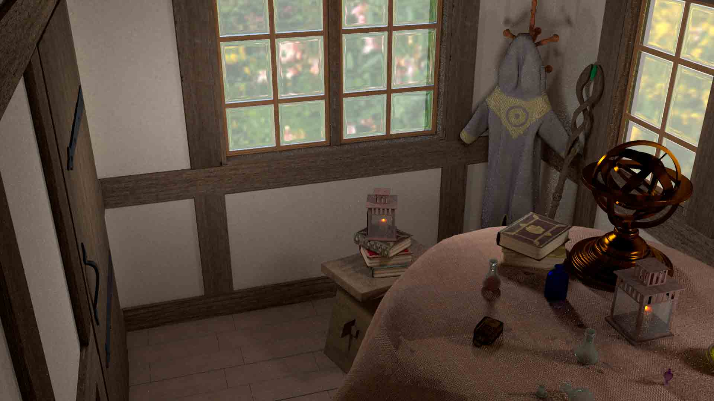
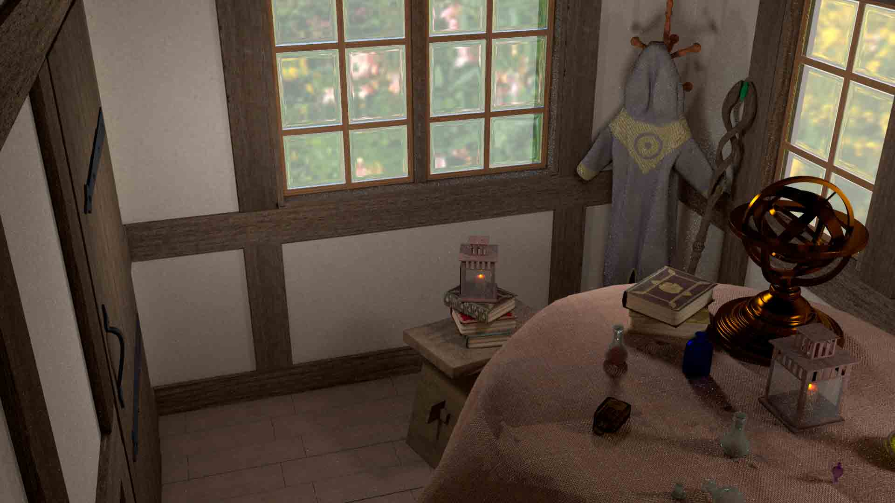

The Mage's Workshop
 


The Mage's workshop was a combined effort of myself, Joeseph Innocenti, and Julia Zuckerberg. Each person modeled and textured their own portion of the project. Each person made their own separate room but collectively pooled together to make items for the room. Joe made the stool, the cloak, the coatrack, and the lanterns with candles. Julia was responsible for the bookshelves, the books, and the astrological globe.